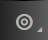
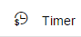
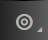
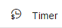

Define a Timer Start Event (Scheduling a Process)
You can configure an integration flow to automatically start and run on a particular schedule.
Context
If you want to configure a process to automatically start and run on a particular schedule, you can use this procedure to set the date and time on which the process should run once or repetitively. The day and time combinations allow you to configure the schedule the process requires. For example, you can set the trigger just once on a specific date or repetitively on that date, or you can periodically trigger the timer every day, specific days in a week or specific days in a month along with the options of specific or repetitive time.
When you use timer with Run Once option enabled, the message is triggered only when the integration flow is deployed. If you want to trigger the message with an integration flow that you have already deployed, you have to Undeploy the integration flow and Deploy it again. If you restart the integration flow bundle, message will not be triggered.
When you delploy or undeploy an integration flow with Timer-Scheduler, the system automatically releases all the scheduler locks.
Procedure
-
In the palette, choose
 Events
Events  Timer
Timer  (choose icon  and icon ).
(choose icon  and icon ).